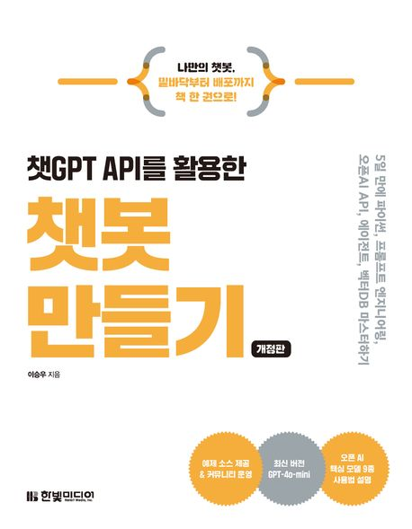

<발달장애인의 눈에 비친 세계>
이데 마사카즈 저자(글)
이담북스 · 2024년 10월 31일
<서툴지만 혼자 살아보겠습니다(본책+워크북)>
소소한 소통 저자(글)
소소한소통 · 2019년 11월 08일
<GPT API를 활용한 인공지능 앱 개발>
올리비에 케일린 , 마리-알리스 블레트 저자(글) · 이일섭 , 박태환 번역
한빛미디어 · 2024년 12월 20일
<모두의 인공지능 with 파이썬>
모두의 시리즈
이영호 저자(글)
길벗 · 2020년 12월 30일
<역량의 창조 : 인간다운 삶에는 무엇이 필요한가>
마사 누스바움 저자(글) · 한상연 번역
돌베개 · 2015년 12월 04일
<자유로서의 발전>
아마티아 센 저자(글) · 김원기 번역 · 유종일 감수
갈라파고스 · 2013년 10월 07일
<의존을 배우다 : 어느 철학자가 인지장애를 가진 딸을 보살피며 배운 것>
에바 페더 키테이 저자(글) · 김준혁 번역
반비 · 2023년 11월 30일
<돌봄 선언 : 상호의존의 정치학>
더 케어 컬렉티브 저자(글) · 정소영 번역
니케북스 · 2021년 05월 25일

<챗GPT API를 활용한 챗봇 만들기>
이승우 저자(글)
한빛미디어 · 2024년 08월 27일
<일잘러의 비밀, 챗GPT와 GPTs로 나만의 AI 챗봇 만들기>
테디노트(이경록) , 김정욱 저자(글)
한빛미디어 · 2025년 02월 10일